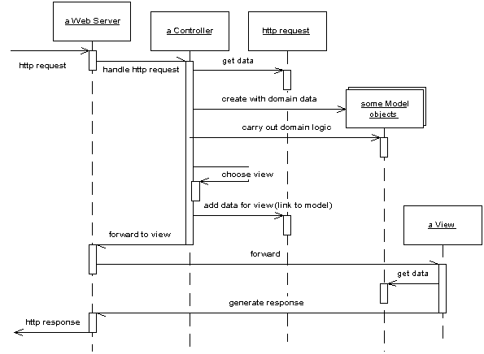

| Home | Articles | Talks | Links | Contact Me | ISA | ThoughtWorks |
One of the biggest changes to enterprise applications in the last few years is the rise of web-browser based user interfaces. They bring with them a lot of advantages: no client software to install, a common UI approach, and easy universal access. There's also a lot of environments which make it easy to build a web app.
Preparing a web app begins with the sever software itself. Usually this has some form of configuration file which indicates which URLs are to be handled by which programs. Often a single web server can handle many kinds of programs. These programs are often dynamic and can be added to a server by placing them in an appropriate directory. The web server's job is to interpret the URL of a request and hand over control to a web server program. There are two main forms of structuring a program in a web server: as a script or as a server page.
The script form is a program, usually with functions or methods to handle the http call - examples include CGI scripts and Java servlets. The program text can then do pretty much anything a program can do and the script can be broken down into subroutines, and create and use other services. It gets data from the web page by examining the http request object which is a HTML string. In some environments it does this by regular expression searching of the text string - perl's ease of doing this makes perl a popular choice for CGI scripts. Other platforms, such as Java servlets, do this parsing for the programmer, which allows the script programmer to access the information from the request through a keyword interface: which at least means less regular expressions to mess with. The output of the web server is another HTML string - the response - which the script can write to using the usual write stream operations in the language.
Writing an HTML response through stream commands is uncomfortable for programmers, and nearly impossible for non-programmers who would otherwise be comfortable preparing HTML pages. This led to the idea of server pages, where the program is structured around the returning text page. You write the return page in HTML and insert into the HTML scriptlets of code to execute at certain points. Examples of this approach include PHP, ASP, and JSP.
The server page approach works well when there is little processing of the response, such as "show me the details of album # 1234". Things get a lot more messy when you have to make decisions based on the input: such as a different format for displaying classical or jazz albums.
Because the script style works best for interpreting the request and sever page style works best for formatting a response, there's the obvious option to use a script for request interpretation and a sever page for response formatting. This separation is in fact an old idea which first surfaced in user interfaces with Model View Controller. Combine this with the essential notion that non-presentation logic should be factored out and we have a very good fit for the concepts of Model View Controller.
Model View Controller is a widely referenced pattern, but on that's often misunderstood. Indeed before web apps appeared on the scene most presentation I sat through of Model View Controller would get it wrong. A main reason for the confusion was the use of the word "controller". Controller is used in a number of different contexts, and I've usually found it used in a different way to that described in Model View Controller. As a result I prefer to use the term input controller for the controller in Model View Controller.
Figure 1: A broad brush picture of how the model, view, and input controller roles work together in a web server. The controller handles the request, gets the model to do the domain logic, then gets the view to create a response based on the model
The request comes in to an input controller, which pulls information off the request. It then forwards the business logic to an appropriate model object. The model object talks to the data source and does everything indicated by the request as well as gathering information for the response. When it's done it returns control to the input controller. The input controller looks at the results and decides which view is needed to display the response. It then passes control, together with the response data, to the view. The input controller's hand off to the view often isn't a straight call, often involves forwarding with the data placed in an agreed place on some form of http session object that's shared between the input controller and the view.
The first, and most important reason for applying Model View Controller is to ensure that models are completely separated from the web services. A good thought experiment for this is to ask yourself how much change you would need to make to existing code to add a command line interface to the program. Separating out the processing into separate Transaction Script or Domain Model objects will make it easier to test them as well.This is particularly important if you are using a server page as your view.
At this point we come to a second use of the word "controller". A lot of user-interface designs look to separate the presentation objects from the domain objects with an intermediate layer of Application Controller objects. The purpose of an Application Controller is to handle the flow of an application, deciding which screens should appear in which order. An Application Controller may appear as part of the presentation layer, or you can think of it as a separate layer which mediates between the presentation and domain layers. Application Controllers may be written to be independent of any particular presentation, in which case they can be reused between presentations. This works well if you have different presentations with the same basic flow and navigation, although often it's best to give different presentations a different flow.
Not all systems need an Application Controller. They are useful only if your system has a lot of logic about the order of screens and the navigation between them. If someone can pretty much see any screen in any order, then you'll probably have little need for an Application Controller.
On the view side there are three patterns to think about: Transform View, Template View and Two Step View. These represent essentially two choices, whether to use Transform View or Template View, and whether two use one stage or a Two Step View. The basic patterns for Transform View and Template View are single stage. Two Step View is a variation you can apply to either Transform View or Template View.
I'll start with the choice between Template View and Transform View. Template View allows you write the presentation in the structure of the page and embed markers into the page to indicate where dynamic content needs to go. There are quite a few popular platforms that are based on this pattern. Many of the more popular of are the sever pages technologies (ASP, JSP, PHP) that allow you to put a full programming language into the page. This clearly provides a lot of power and flexibility, sadly it also leads to very messy code that's difficult to maintain. As a result if you use server page technology you must be very disciplined to keep programming logic out of the page structure, often by using a companion object.
The Transform View uses a transform style of program, the usual example is XSLT. This can be very effective if you are working with domain data that is in XML format, or can easily be converted to XML. An input controller picks the appropriate XSLT stylesheet and applies it to XML that's gleaned from the model.
If you use procedural scripts as your view, you can write the code in either Transform View or Template View style - or indeed in some interesting mix of the two. I've noticed that most scripts predominantly follow one of these two patterns as their main form.
The second decision is whether to be single stage or use Two Step View

Figure 2: A single stage view
A single stage view mostly has one view component for each screen in the application. The view takes domain oriented data and renders it into HTML. I say mostly because similar logical screens may share views, but most of the time you can think of it as one view per screen.

Figure 3: A two stage view
A two stage view breaks this process into two stages, producing a logical screen from the domain data, then rendering that logical screen into HTML. There is one first stage view for each screen, but only one second stage view for the whole application.
The advantage of the Two Step View's is that it puts the decision of what HTML to use in a single place, this makes global changes to the HTML easy since there's only one object to alter and every screen on the site alters. Of course you only get that advantage if your logical presentation stays the same, so it works best with sites where different screens use the same basic layout. Highly design intensive sites won't be able to come up with a good logical screen structure.
Two Step View work even better if you have a web application where its services are being used by multiple front end customers, such as multiple airlines fronting the same basic reservation system. Within the limits of the logical screen, each front end can have a different appearance by using a different second stage.
There are two patterns for the input controller. In the most common case you have an input controller object for every page on your web site. In the simplest case this Page Controller can be a server page itself: combining the roles of view and input controller. In many implementations it makes things easier to split out the input controller into a separate object. The input controller then can create appropriate models to do the processing and instantiate a view to return the result. Often you'll find there isn't quite a one-to-one relationship between Page Controllers and views. A more precise thought is that you have a Page Controller for each action: where an action is a button or link. Most of the time the actions correspond to pages, but occasionally they don't - such as a link that may go to a couple of different pages depending some condition.
With any input controller there are two responsibilities: handling the http request and deciding what to do with it. Often it makes sense to separate these two roles. You can use a server page to handle the request, it then delegates to a separate helper object to decide what to do with it. Front Controller goes further in this separation by having only one object that handles all requests. This single handler interprets the URL to figure out what the kind of request it's dealing with and creates a separate object to process the request. This allows you to centralize all http handling within a single object avoiding the need to reconfigure the web server whenever you change the action structure of the site.
Most books on web server technologies provide a chapter or two on how to produce good designs with them, although these are often buried in the technological descriptions. An excellent chapter to read on Java web design is Chapter 9 of [Brown et al]. The best source for further patterns is [Alur, Crupi, and Malks], most of these patterns can be used in non-Java situations. I stole the terminology on separating input and application controllers from [Knight and Dai]
 |  |